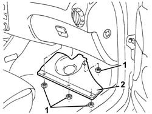
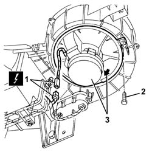

5040C30 FAN MOTOR - R+R
- Path
- Procedures > 50 AUXILIARY UNITS > 5040 AIR CONDITIONING CASING AND COMPONENTS > 5040C AIR CONDITIONER BOX AND COMPONENTS > 5040C30 FAN MOTOR - R+R
- Kind
- repair procedure (removal / refitting; the operation number is the code)
- Applies to
- engines: 2.0 JTS, 3.2 V6, 1.9 JTD 16V; all production periods
- Interactive page
- https://sloeber94.github.io/elrnDB-aGt/en/#/125001540
Applies to: engines: 2.0 JTS, 3.2 V6, 1.9 JTD 16V; all production periods
 Removing
Removing
 Refitting
Refitting1. Working under the right side of the dashboard, undo the nuts fixing the bulkhead.
2. Remove the bulkhead.

Applies to: engines: 2.0 JTS, 3.2 V6, 1.9 JTD 16V; all production periods
1. Disconnect the electrical connection.
Name | Connector | |
|---|---|---|
1 | Passenger compartment ventilation fan | See N85 PASSENGER COMPARTMENT VENTILATION FAN ( CONNECTORS ) |
2. Undo the bolt fixing the fan.
3. Rotate the fan and extract it.

Applies to: engines: 2.0 JTS, 3.2 V6, 1.9 JTD 16V; all production periods
Refitting
RemovingCheck that the fan is not damaged and, if necessary, test it.
Fit and rotate the fan and secure it using the bolt.
Connect the electrical connection.
Position the bulkhead and fix it using the nuts.
Test the operation of the fan.